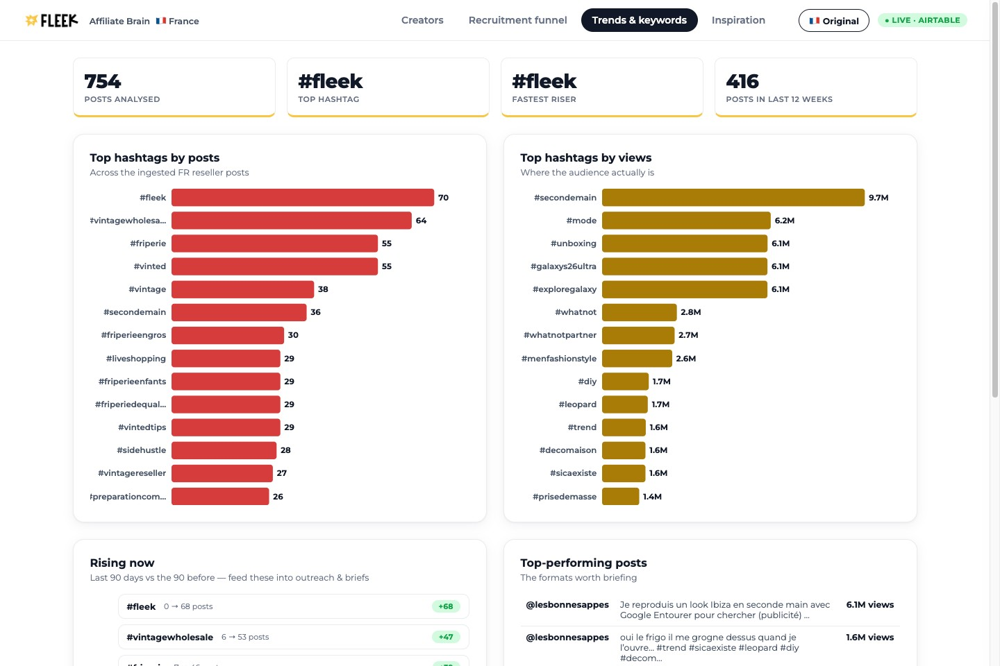

Influencer Marketing Manager · case study · 2026-07-10
I didn't find ten French creators.
I built the system that finds ten thousand.
A working prototype of Fleek's Content Brain, pointed at France — and the complete, timestamped record of how it was built, including the parts where the AI was wrong.
Doug Woolfenden · github.com/dougal-25/fleek-affiliate-content-engine
What we're judged on
A signed partner who never posts is worth nothing.
France is structurally affiliate-first. The market is small enough to know personally, and the metric is activation — not reach, not follower count, not contracts signed.
mission/mission.md · Fleek Wiki/research/TikTok Shop France.md
● The stack — every piece API-driven, so every piece schedulable
Nine tools. One engine. No Zapier.
Rule of thumb: Perplexity teaches the engine, Apify feeds it, Claude judges, Python moves money.
● live · claude code + perplexity
First, teach the system what "good" looks like.
quite frankly, I don't think it's rich enough. The research task doesn't seem to have populated the wiki base with enough material
wiki-knowledge-base-builder — rejected the summary
sweep, switched to deep-reads of named FR primary
sources · 25 questions, hard cap 35 calls

Live on the dashboard: they say kilo, never ballot —
creator language, not supplier jargon. #friperiemontpellier: geo-tags are real in France.
● live · apify + claude · part 1, discovery
Scrape the market, gate hard, recommend — never auto-qualify.
Is my apify setup so i can run multiple scrapes across social channels… to find the best as well as up and comming france based clothing resellers. think friperie, think vintage resale
run_discovery.py --market france
tiktok hashtags + instagram graph-walk from verified seeds
gates: genuine reseller AND clothing AND not a supplier
Those are the affiliates, that is the type of affiliate, not the audience… perhaps the scoring system doesn't work
2026-07-10 00:43 — The model filed "pro reseller / hobbyist" under audience when they're affiliate types. Schema errors are the expensive kind: they look like working code.
● live · airtable → vercel · part 1b
The roster isn't a spreadsheet.

fleek-affiliate-dashboard.vercel.app — deployed, data fresh from Airtable, credentials redacted server-side. Open it live in the room.
Built in Fleek's own brand — Montserrat, coral, gold — so it reads as their product, not an admin panel. Ships live and as one offline HTML file.
● live · calibrated on Fleek's real partners
The score predicts one thing: will their audience buy stock.
Half the score — because the customer is the viewer, not the creator. Pro-reseller viewers weigh full, hobbyists 0.8, general fashion ~0.
Do they talk sourcing, kilos, marges? A haul channel isn't a sourcing channel.
Do they demonstrably resell — Whatnot, Discord, coaching? Trust converts; reach doesn't.
Already mentions Fleek or carries an RFD- code. Small on purpose — warmth is a tiebreak, not a strategy.
Followers: 0 points. Confidence is a gate, not points. Weights are v1 — a stated theory the funnel re-fits with outcomes, per cohort.
Does it agree with reality?
| Creator | Fit | Truth |
|---|---|---|
| @behindthesale | 77 | named Fleek partner — ranks 1st |
| @juliacrcl | 71 | named Fleek partner — ranks 2nd |
| @nathanviall3 | 63 | pro seller, hobbyist audience |
| @giu.cst | 10 | 253k followers, wrong audience |
| @juliettekitsch | 1 | aesthetic, zero resale intent |
Both known-good partners rank top-2; both known-wrong score <10. n=5 — an anchor, not a training set, and labelled so.
the bar is a percentile of the live distribution, not an absolute number
2026-07-10 — My hard-coded cutoff of 70 rejected
@juliacrcl, who scores 62 on TikTok. Doug made the bar the top ~50% of the live roster — it
lands exactly where the proven partner sits. Activation's job is to raise scores; the same percentile
then selects a stronger cohort.
● live · the roster, called — qualify · watch · cut
Who's in, who's next, who's out — and why.
| Creator | Fit | Segment | Why | Call |
|---|---|---|---|---|
| @coco_duc | 84 | Reseller educator | 9,000+ Vinted sales, teaches sourcing to FR resellers | QUALIFIED |
| @bartorico_ | 82 | Reseller educator | 91k followers whose audience is actively seeking sourcing | QUALIFIED |
| @five_max_ | 82 | Thrift flipper | physical Paris thrift op, 40,000+ pieces — buys stock constantly | QUALIFIED |
| @laprovidencewholesale | 92 | Wholesaler / supplier | top score, but a supplier — partnership talk, not affiliate | QUALIFIED |
| @juliacrcl | 100 | Thrift flipper | ⚠ likely existing Fleek partner — re-activation, never a cold pitch | WATCH |
| @saw2hands | 76 | Live seller | 111k Whatnot sales, 2.4k followers — invisible to any follower floor | WATCH |
| @giu.cst | 10 | General fashion | 253k followers, best engagement in set — audience is sellers, not buyers | CUT |
| @alex_yeddertcg | — | Off-vertical | passed every IG gate; his TikTok bio: Pokémon TCG. Second platform = lie detector | CUT |
| @50.grass | — | Off-vertical | perfect pro lexicon — sells synthetic lawn. Forced the clothing gate | CUT |
● live · claude · part 2, outreach
The engine drafts. A human sends. Always.
qualification is the trigger. Drafts use first names, never handles, never invented. And it still never sends.
run_outreach.py --qualified
their real posts → value palette (wiki-sourced facts only)
→ 3-touch FR sequence · no send code path exists in the repo
known partners stay in the pipeline, flagged — visibility beats removal
2026-07-10 — I'd hard-excluded Fleek's known partners so the engine couldn't cold-pitch them. Doug overturned it: hiding protects by making the risk invisible; a ⚠ VERIFY banner protects by informing the human. Nothing sends, so visibility wins.
● live · airtable · part 3, the funnel
The engine recommends. A human qualifies. Nothing skips the gate.

Live from Airtable. Honest, not impressive — nothing is past Qualified because outreach never auto-sends. The funnel is a view of the same database, not a second system.
The gate is a command
Qualification releases the outreach draft. Approval is deliberate — never automatic.
qualifying a creator stays a manual approval until the system is consistent — we want to work with them
2026-07-11 — The first run auto-qualified 39 creators on score alone. Doug turned it off and I migrated all 39 back to Prospect + Recommended. The engine suggests with reasons; the human curates.
● simulated · brief generator mechanism · part 4 — "the whole game"
Nobody hand-writes 475 briefs. So the engine writes them.
For each creator: profile them from their own post history, study what has already converted for them, then generate a brief in their format, their hook, their vocabulary.
Feedback closes the loop — last month's post performance becomes next month's brief. That loop, not the generator, is the asset.
How to get partners posting more without paying more per post: pay them in sourcing advantage, not cash. French resellers already pay for private Discord coaching. Fleek is the only party that can offer commission and wholesale margin in one relationship.
delete scout and brain research agent. rename skill to wiki knowledge base builder
2026-07-09 13:22 — I asked for one research agent; it built two, each welded to Fleek. I deleted both. What replaced them is project-agnostic and has since been pointed at other domains. Something that still works if France were 500 creators — or if the project weren't Fleek.
● simulated · the allocator mechanism · part 5
Models write briefs. Code moves money — and CAC is a constraint, not the selector.
The trap I designed around: CAC is reach-weighted, and the brief says trust beats
reach. Run the numbers on Fleek's own named partners and CAC ranks them badly. So
fit selects the shortlist; CAC is the budget constraint. Predicted CAC ships as a
band — £ / ££ / £££ with a confidence — never a false-precision point.
The real model needs three numbers only Fleek has: referral funnel rate, first-order AOV by tier, LTV by segment. Until then it's honest scaffolding, not a shipped figure.
Money splits recruitment vs re-activation, reallocates monthly toward best-CAC segments — deterministic code, never a model.
simulated roster The allocator runs today against a 1,000-creator simulation — proving the mechanism, not reporting Fleek's numbers.
I do not want to use 8 million tokens. I do not want to exhaust all the token usage
2026-07-09 11:45 — The first thing Doug said about the research agent, before what it should do, was what it must not cost. The Perplexity call cap, the cheap model, the scrape limits all descend from this line.
2026-07-09 · 22:17 · nine hours into the build
The moment I overruled the machine.
Doug, verbatim I need to approach this differently. If we look at the task in hand, do you have the job description and the influencer marketing engine task and case study task at hand? Do you have it in mind? Do you know what the task was?
Claude, verbatim Honest answer first: I have the Draft 2 approach doc, but I haven't read the original task brief or the job description verbatim this session — I only know them second-hand through references.
Nine hours of good work resting on a paraphrase. The
corrections are dated at the bottom of mission/mission.md — recorded, not quietly patched.
The question you'll ask at every section
Monday, 06:00. Nobody is awake.
Same Python, same repo, on a scheduler — GitHub Actions or Railway cron. Nothing lives only on a laptop; every stage is an API call, which is exactly what makes it schedulable.
The engine proposes. Humans approve. Two gates, permanent: nothing is sent to a real creator, and no model ever allocates spend.
Why this survives me leaving
The knowledge is in the wiki, the intent is in spec/, the constants are in
mission/, and the judgement is in a scoring rubric anyone can read and argue with.
spec/autonomy-layer.md
git update please — bare in mind the more recent architectural udpates in other sessions that have outadted this session
2026-07-09 23:59 — Six worktrees in parallel means a session can be confidently working from an architecture another session replaced an hour ago. Managing that staleness is a real skill of working this way. Nobody warns you about it.
Live, in a terminal, right now
It isn't a mockup.
Two things run in the room. The real pipeline — discover, qualify, draft — against the live Airtable, redacted. And the simulated allocator, which runs with no API key at all in deterministic mock mode, so anyone can clone the repo and reproduce it.
The dashboard at fleek-affiliate-dashboard.vercel.app is the same data, made touchable.
github.com/dougal-25/fleek-affiliate-content-engine · pip install -r requirements.txt
If I had six months
Close the gap between signed and posting.
- Month 1 — point the engine at Fleek's real 1,000+ roster and confirm the
@juliacrclmatches: live affiliates the system currently reads as strangers. Wire in Fleek's three numbers — funnel rate, AOV by tier, LTV — so predicted CAC stops being scaffolding. - Month 2–3 — the re-weighting agent: funnel outcomes re-fit the scoring weights per cohort (it proposes, never silently applies). Test the sourcing-advantage offer against cash-per-post on matched segments. If pro resellers stay away, the offer is wrong, not the messaging.
- Month 4–6 — weights become per-market config, so
markets/germany.pyis the next country. The community layer: French resellers already pay for private Discord coaching — Fleek should be the room they're paying to be in.
The thing I'd want you to take from this is not the engine. It's that when the machine was confident and wrong, I caught it — twice, on the record, with timestamps.
Every prompt, every failure, every reversal:
deliverables/evidence/ · 17 receipts, verbatim, generated from the raw
transcripts